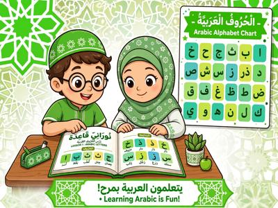

Noorani Qaida Online for Kids: Learn to Read Quran Step-by-Step

Noorani Qaida is the first step for any child or beginner who wants to read the Quran correctly. It teaches Arabic letters, pronunciation (Makharij), and basic Tajweed rules in a simple, step-by-step way.
What is Noorani Qaida?
Noorani Qaida is a small booklet with 17 lessons that teaches you how Arabic letters connect, how to pronounce them correctly, and how to read with Tajweed. It is used worldwide for kids aged 4-10.
Why Learn Noorani Qaida Online?
- One-on-One: Teacher corrects Makharij instantly
- Visual: Kids see letters on screen
- Flexible: 20 mins daily is enough for kids
17 Lessons of Noorani Qaida Explained
Lessons 1-6: Single Arabic letters, joined letters
Lessons 7-11: Harakat, Tanween, Madd
Lessons 12-17: Sukoon, Shaddah, practice from Quran
If your child struggles with reading, see how to improve Quran reading.
How Long Does It Take?
For kids: 3-4 months (3 classes/week, 30 mins). For adults: 2-3 months. Learn more about how much time kids need.
Noorani Qaida vs Yassarnal Quran
Noorani Qaida is more detailed for Tajweed. Yassarnal Quran is faster but less detailed. For non-Arabs in USA/UK, Noorani Qaida is better.
After Noorani Qaida - What's Next?
After finishing, your child moves to: 1. Tajweed basics 2. Juz Amma memorization with our One-Year Plan. Full roadmap in our Ultimate Guide to Online Quran Classes.